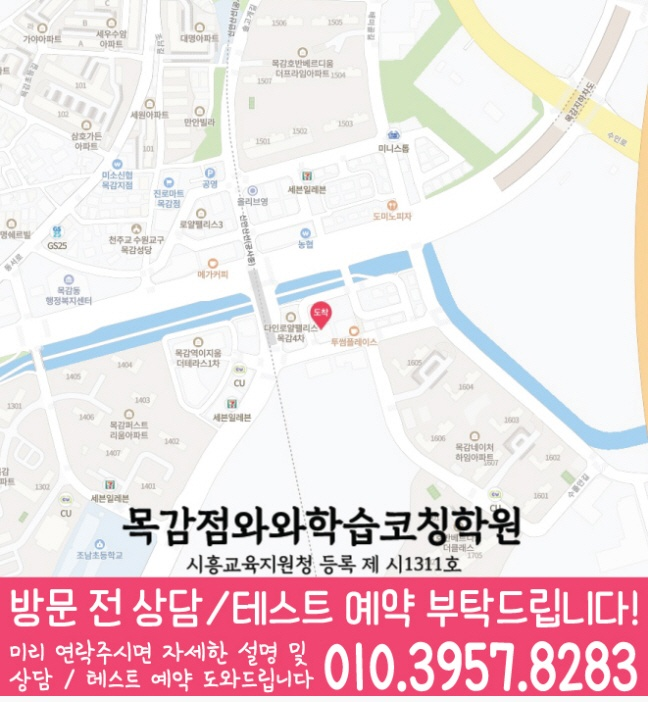

처음부터 많은 문제만 풀기보다, 개념 이해도와 풀이 습관을 먼저 확인해 학생에게 필요한 학습 순서를 잡습니다.


LOCAL ACADEMY GUIDE
목감동 와와학습코칭센터 영어·수학·국어(영수) 학습 안내
시흥시 목감동에서 영어·수학 학원을 찾는 학생을 위해, 현재 실력 진단부터 개념 정리, 유형별 문제풀이, 오답 관리까지 이어지는 학습 흐름을 안내합니다. 와와학습코칭센터는 학생마다 다른 목표와 학습 속도를 확인해 꾸준히 실력이 쌓이도록 수업과 코칭을 함께 진행합니다.
목감동 수업의 핵심 포인트
영어는 어휘·문법·독해 흐름을 점검하고, 수학은 개념·유형·오답 원인을 단계별로 분류해 관리합니다.
선생님 특징
학생이 어디에서 막히는지 질문과 풀이 과정을 통해 확인하고, 필요한 개념을 다시 연결해 줍니다.
숙제·복습·오답 정리 습관을 점검해 수업 시간이 일회성으로 끝나지 않도록 관리합니다.
수업 진행방식
1. 현재 수준 확인
학년, 학교 진도, 최근 시험 결과를 바탕으로 부족한 단원과 자주 틀리는 유형을 정확히 확인합니다.
2. 개념 정리와 유형 학습
바로 문제풀이로 넘어가기보다 핵심 개념을 정리한 뒤, 대표 유형부터 응용 문제까지 단계적으로 연습합니다.
3. 오답 관리와 학습 피드백
틀린 문제를 다시 푸는 데서 그치지 않고, 왜 틀렸는지와 다음에 어떻게 풀어야 하는지를 정리합니다.
학년별 학습 전략
초등
- 기초 연산, 어휘, 독해(문장 이해) 습관을 안정적으로 잡습니다.
- 중등 과정으로 이어질 핵심 개념을 부담 없이 예습·복습 구조로 준비합니다.
중등
- 학교 진도와 내신 대비를 함께 관리해 시험 전 학습 공백을 줄입니다.
- 영어 문법과 수학 단원별 유형을 반복 점검하며 오답을 줄이는 훈련을 합니다.
고등
- 내신과 수능형 문제풀이를 구분해 학습 전략을 체계적으로 구성합니다.
- 약한 단원, 시간 관리, 오답 패턴을 집중적으로 점검해 점수 상승을 목표로 합니다.
국어·영어독해/수학 실전 대비
- 시험 범위와 출제 경향에 맞춰 복습 계획을 조정하고 학습 우선순위를 정합니다.
- 실수 유형과 자주 틀리는 문제를 우선 점검해 실전에서 흔들리지 않게 만듭니다.
목감동 와와학습코칭센터는 시흥시 학생들의 현재 상태를 기준으로 필요한 학습을 정리하고, 상담을 통해 영어·수학(영수) 및 국어 학습 방향을 자세히 안내드립니다.
센터 위치 안내
주소
경기 시흥시 수풀안길 14-23 4층 402호
오시는 길
~ 와와학습코칭센터 목감점(모두) 위치는 (경기 시흥시 수풀안길 14-23 4층 402호)입니다. 시흥시 수풀안길 14-23 메트로타워2 4층(1층에 원할머니보쌈있습니다)
주요 타깃학교(이외 학교도 수업 가능)
초등 타깃학교
조남초
목감초
중등 타깃학교
조남중
고등 타깃학교
목감고
과목별 수강 가능 학년
국어
초1
초2
초3
초4
초5
초6
중1
중2
중3
고1
고2
고3
영어
초1
초2
초3
초4
초5
초6
중1
중2
중3
고1
고2
고3
수학
초1
초2
초3
초4
초5
초6
중1
중2
중3
고1
고2
고3
과학
초1
초2
초3
초4
초5
초6
중1
중2
중3
고1
고2
고3
사회
초1
초2
초3
초4
초5
초6
중1
중2
중3
고1
고2
고3
학원 등록 정보
수업료는 어떻게 되나요? ✨
A - 서울 (1회 90-100분 수업기준)
| 횟수 | 초등 | 중등 | 고등 |
|---|---|---|---|
| 주 3회 | 249,000 | 266,000 | 299,000 |
| 주 4회 | 319,000 | 341,000 | 384,000 |
| 주 5회 | 389,000 | 416,000 | 469,000 |
B - 서울 외 지점 (1회 90-100분 수업기준)
| 횟수 | 초등 | 중등 | 고등 |
|---|---|---|---|
| 주 3회 | 219,000 | 236,000 | 269,000 |
| 주 4회 | 279,000 | 301,000 | 344,000 |
| 주 5회 | 339,000 | 366,000 | 419,000 |
* 수업료는 지역 및 횟수에 따라 일부 차이가 있을 수 있습니다.
상담부터 오답관리까지 이어지는 학습 흐름
전국학원은 동네별 학원 정보를 안내할 때도 단순 위치 안내에 그치지 않고, 학생의 현재 상태를 어떻게 확인하고 관리할지 함께 살펴볼 수 있도록 구성합니다.
상담과 현재 상태 확인
학교·학년, 최근 성적, 어려운 과목, 숙제 수행, 공부 시간, 목표를 확인해 먼저 해결할 문제를 정리합니다.
교과와 학습행동 진단
개념 결손, 계산 실수, 문제 해석, 복습 부족처럼 공부가 막히는 원인을 나누어 시작 교재와 진도를 정합니다.
플래너 실행 점검
과목·단원·분량·완료 기준을 적고 실제 실행 결과를 기록해 다음 학습량과 복습 주기를 조정합니다.
오답 원인 분석과 재학습
틀린 이유를 개념, 조건 누락, 실수, 시간 부족 등으로 구분하고 유사 문제와 반복 복습으로 연결합니다.
PARENT FAQ
학부모 FAQ
Q교재는 어떤 것을 사용하나요?
학생의 학년, 수준, 학교 진도와 학습 목표에 적합한 시중 교재 또는 자체 자료를 사용합니다.
Q수업 사이에 쉬는 시간이 있나요?
장시간 수업의 경우 학생들이 집중력을 회복할 수 있도록 적절한 쉬는 시간을 운영합니다.
Q학생이 연락 없이 결석하면 확인해 주나요?
사전 연락 없이 출석하지 않은 경우 학생 또는 보호자에게 확인 연락을 드립니다.
Q숙제는 매일 나오나요?
수업 내용을 복습하고 다음 수업을 준비할 수 있도록 적절한 분량의 과제를 제공합니다.
REAL PARENT REVIEWS
수강생 학부모 후기
목감 영어수학 학원 정보를 확인하신 학부모님들이 참고할 수 있는 실제 학습 후기입니다.
학생들이 안전하게 다닐 수 있도록 관리해 주십니다.
아이의 실력에 맞춰 수업을 진행해 주셔서 학습 효과가 높았습니다.
단기간의 점수보다 올바른 공부 방법을 알려주셔서 좋았습니다.
수업과 상담 모두 세심하게 진행되어 만족하고 있습니다.
학부모가 놓치기 쉬운 부분까지 세심하게 안내해 주셨습니다.
학습 결과가 좋지 않을 때 원인을 함께 찾아주셔서 도움이 되었습니다.
STUDY GUIDE
목감 영어·수학 학원 선택 전 확인할 학습 포인트
목감에서 학원을 찾을 때는 위치만큼이나 학생의 현재 학습 상태, 학교 진도, 과목별 약점, 시험 일정에 맞춰 관리가 가능한지 확인하는 것이 중요합니다.
최근 시험지와 숙제 습관을 함께 확인하면 단순 점수보다 부족한 단원과 공부 루틴을 더 정확히 파악할 수 있습니다.
영어·수학을 따로 보는 것보다 플래너, 오답, 내신 대비 흐름까지 함께 관리되는지 확인하면 상담 방향이 선명해집니다.
학년별 공부법과 시험기간 계획표를 먼저 읽어보면 상담 전 질문을 더 구체적으로 준비할 수 있습니다.
경기 시흥시 목감 상담 전 체크
최근 시험지, 학교 진도, 어려운 단원, 숙제 수행 정도를 함께 정리해두면 상담에서 학생에게 필요한 학습 순서를 더 빠르게 잡을 수 있습니다.
함께 보면 좋은 학습가이드
현재 페이지의 학년·과목과 연결되는 정보성 콘텐츠입니다. 지역 페이지와 함께 읽으면 상담 준비와 학습 계획을 더 구체화할 수 있습니다.
목감 관련 학원 페이지
현재 보고 있는 지역 안에서 센터 안내와 학년·과목별 상세 페이지로 바로 이동할 수 있습니다.
목감 영어수학 학원 상담이 필요하신가요?
학생의 현재 학습 상황과 목표를 정리해 상담문의로 남겨주시면, 학습 방향을 더 구체적으로 확인할 수 있습니다.
상담문의